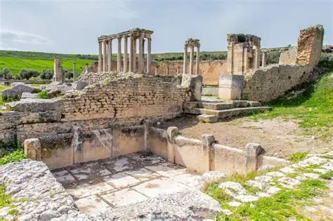
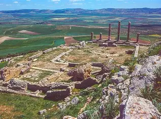
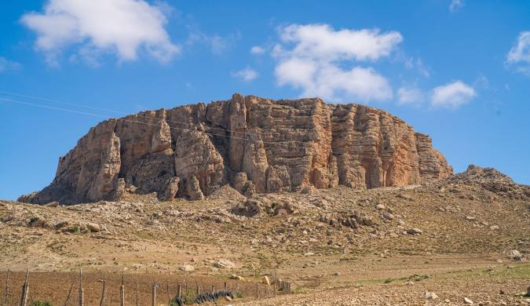
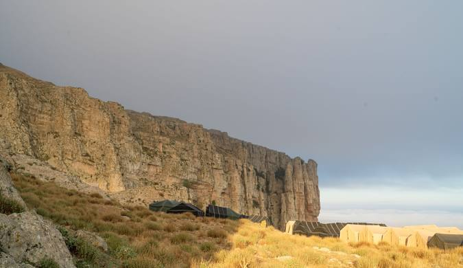
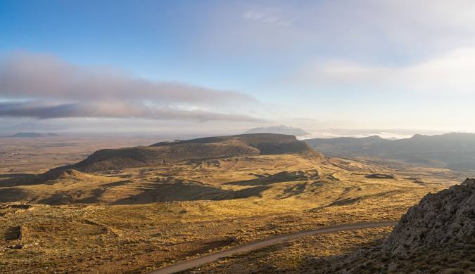
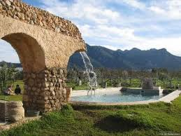
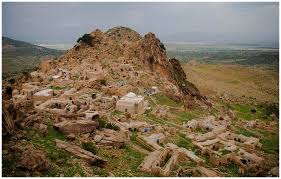

The North-West of Tunisia is the country's most lush and fertile region, often referred to as the "Green Belt." Characterized by its dense Mediterranean forests, rolling hills, and abundant water resources, this region offers a unique ecological landscape that is vital to the country’s environment and economy. The terrain is dominated by the Kroumirie Mountains, home to the largest Cork Oak (Chêne-liège) forests in North Africa, which create a cool, humid microclimate unlike anywhere else in the nation.
This "Green North-West" is defined by its diversity: from the misty peaks of Aïn Draham, where snow is common in winter, to the turquoise shores of Tabarka, where the forest literally meets the sea. The region also serves as Tunisia's "water tower," containing the majority of the country's dams and natural springs, such as those in Beni M'Tir. For the tourism sector, this area represents the pinnacle of eco-tourism and sustainable development, offering endless opportunities for hiking, bird watching, and thermal spa retreats. It is a region where nature, history, and rural authenticity converge to create a high-potential destination for travelers seeking serenity and adventure.


.jpg)
Beja is a stunning city in Northwest Tunisia, famous for its green hills and rich agriculture. It is known as the "Granary of Tunisia" because of its large wheat fields that turn golden in summer. The city has a unique charm with its historical sites and the famous storks that build nests on top of the buildings. Visitors love Beja for its peaceful nature and its traditional food, especially the famous "Borzgane." It is a wonderful place to see the vast green landscapes and enjoy the authentic Tunisian countryside.



Dougga (ancient Thugga) is widely considered the best-preserved Roman small town in North Africa and has been a UNESCO World Heritage site since 1997. Perched on a hilltop overlooking the fertile valley of Oued Khelled, the site is unique for its stunning integration of Roman urbanism within a pre-existing Numidian landscape. Unlike many other ancient cities, Dougga showcases a fascinating blend of cultures, including Numidian, Punic, Roman, and Byzantine influences. Its most iconic landmarks include the Capitole, a masterpiece of Roman architecture dedicated to the gods Jupiter, Juno, and Minerva, and the Roman Theatre, which still hosts performances today with a capacity of over 3,500 spectators. The presence of the Libyco-Punic Mausoleum, a rare pre-Roman monument, further highlights the site's deep historical roots. For the North-West region, Dougga is not just an archaeological site but a powerful symbol of Tunisia’s ancient grandeur and a cornerstone for high-value cultural tourism.


Often referred to as 'La Petite Dougga,' Aïn Tounga is a hidden archaeological treasure that captures the quiet beauty of Tunisia’s rural heritage. This ancient Roman site, known historically as Thignica, offers an intimate experience for travelers seeking to escape the crowds and wander through untouched ruins. Its standout features include a remarkably preserved Byzantine fortress and the majestic remains of its ancient temples and theatre. Surrounded by rolling green hills and olive groves, the site provides a serene atmosphere where history and nature coexist in perfect harmony. A visit to Aïn Tounga is a journey of discovery, revealing the architectural elegance of a forgotten Roman colony. It is truly the perfect companion stop for anyone exploring the grandeur of Dougga.


Bizerte, the northernmost city in Africa, is a captivating blend of ancient history and stunning natural landscapes. Known for its strategic location where the Mediterranean Sea meets Lake Bizerte, the city is famous for its Old Port, a picturesque harbor lined with colorful fishing boats and traditional white-walled houses. Beyond its scenic beauty, Bizerte holds a proud place in Tunisian history as a symbol of resistance and the site of the final "Evacuation" from colonial rule. Visitors are often drawn to its diverse geography—ranging from the lush greenery of the Nador hills to the crystal-clear waters of Raf Raf and Ghar El Melh. Whether you are exploring its historic fortresses or enjoying the famous local "Lablebi," Bizerte offers a unique, authentic atmosphere that stays with you long after you leave.


.jpg)
El Kef is a majestic city perched on the side of the Jebel Dyr mountain, offering some of the most breathtaking panoramic views in Tunisia. Known for its cool climate and authentic soul, the city is a living museum where different civilizations—from the Numidians and Romans to the Ottomans—have left their mark. The iconic Kasbah fortress stands tall over the city, guarding its rich heritage and the winding alleys of the old Medina. El Kef is not just about history; it is also a spiritual and cultural hub, famous for its Sufi traditions and the unique "Borzgane" couscous. With its stunning Roman ruins in nearby Zama and its welcoming people, El Kef remains a hidden treasure for those seeking peace, culture, and cooler mountain air



High in the North West, where the earth meets the sky, stands a natural fortress carved by time and history. The Table of Jugurtha isn't just a mountain; it’s a 1,200-meter-high plateau that has witnessed the rise and fall of civilizations. From this breathtaking summit, you can see across the plains of Tunisia to the borders of Algeria. Whether you are seeking the silence of nature, the thrill of the climb, or the secrets of King Jugurtha’s ancient stronghold, this majestic site offers a view—and an experience—that will stay with you forever.




Zaghouan is a majestic destination where the rugged beauty of the mountains meets the serenity of ancient history. Nestled at the foot of the imposing Djebel Zaghouan, the city is world-renowned for its Water Temple (Temple des Eaux), a Roman marvel that once marked the starting point of a 132-km aqueduct to Carthage. Beyond its Roman heritage, Zaghouan is a haven for adventure seekers and nature lovers, offering breathtaking trails for hiking and world-class rock climbing. The town itself is famous for its charming Andalusian-style streets and the sweet aroma of its iconic "Kaak Warka"—a delicate pastry scented with Eglantine water. Whether you are exploring its mystical ruins or enjoying the mountain breeze, Zaghouan offers a refreshing escape into Tunisia’s natural and historical heart.


.jpg)
Bulla Regia is one of Tunisia’s most extraordinary archaeological sites, world-renowned for its unique underground Roman villas. While most Roman cities were built entirely above ground, the inhabitants of Bulla Regia constructed sunken ground floors to escape the intense summer heat of the Jendouba plains. This architectural ingenuity preserved some of the most beautiful mosaics in the world "in situ" (in their original place), such as the famous House of Amphitrite. Beyond the underground homes, the site features a grand theatre, a forum, and massive public baths, making it a critical pillar of the North-West’s cultural and historical heritage..


Ain Draham is a very beautiful town in the mountains of Tunisia. It is famous for its green forests and houses with red roofs. The air is fresh and the nature is wonderful all year round. In winter, snow often covers the town and makes it look like a dream. Many people come here to walk in the forest and enjoy the quiet life. It is the bestplace for nature lovers who want to relax and see beautiful views.